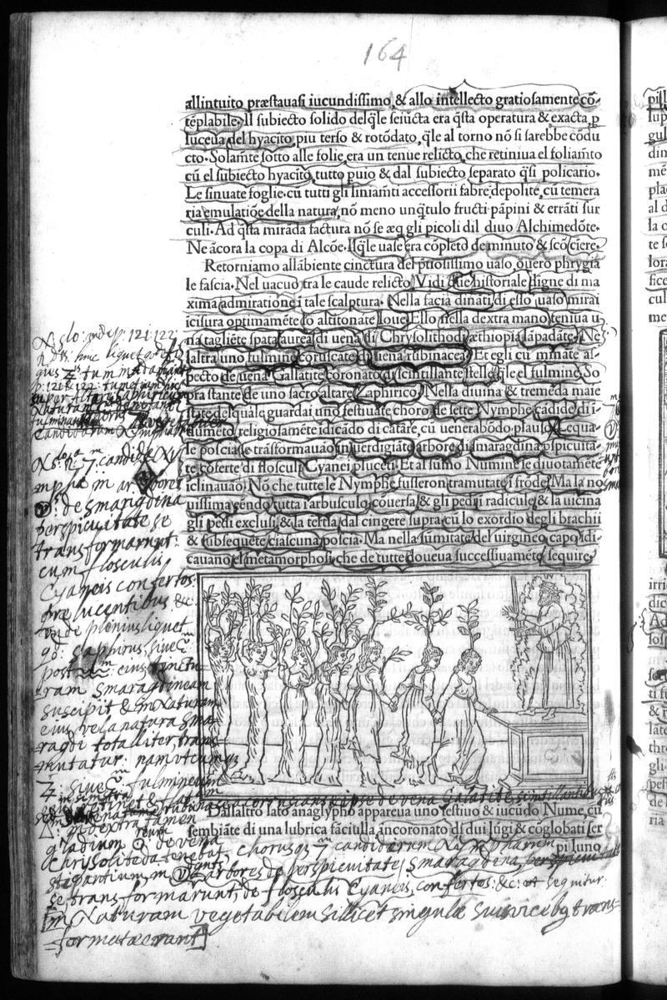

← All Folios
Signature l2v
Folio 82v, Quire l

British Library, London — C.60.o.12
Vision Reading (Phase 3 deep analysis)
Primary hand: Multiple · Hands: 3 · Type: woodcut_page · Sig: l3v
Woodcut: Procession of nymphs with woodcut at bottom showing gathering at altar
Lower woodcut shows a group of figures (nymphs?) gathered around what appears to be a table or altar, with trees and an architectural structure. The printed text above describes the Bacchic procession. Dense annotations in left and bottom margins.
Condition: Good
Transcription Attempts
left_margin · Latin/Greek · MEDIUM
Chrysoliton [...] de [...] Alcoe [...] [...] Chrysopheires [...]
KEY: 'Chrysoliton' (chrysolite — golden stone), 'Chrysopheires' — a reader has coined or cited a Greek compound meaning 'gold-bearing'. This is explicit alchemical vocabulary: chrysopoeia = gold-making. 'Alcoe' may relate to alchemical vessels
left_margin_lower · Latin · MEDIUM
Sola [...] transformatio [...] Smaraldo [...] Evanis [...]
'transformatio' (transformation), 'Smaraldo' (emerald). Explicit alchemical transformation language combined with precious stone reference. The Emerald Tablet (Tabula Smaragdina) is the foundational text of alchemy
bottom · Latin · MEDIUM
[...] choros [...] [...] forpinatiss [...] Smaraldi [...] Clivensis [...] [...] transformans [...] vegetabilem [...] subiecto [...] [...] Quinta [...] Essentia [...] [...] formida [...] et quest [...]
MAJOR FINDING: 'Quinta Essentia' = quintessence (the fifth essence — the goal of alchemical distillation). 'transformans' (transforming), 'vegetabilem' (vegetable/growing), 'Smaraldi' (emerald). This is the most explicitly alchemical annotation cluster found in the procession section. The reader is interpreting the Bacchic procession as an alchemical operation
Scholarly Significance
PAGE 164 IS A MAJOR NEW ALCHEMICAL SITE. The annotations include 'Quinta Essentia' (quintessence), 'Chrysopheires' (gold-bearing), 'transformatio/transformans' (transformation), and 'Smaraldo/Smaraldi' (emerald = Tabula Smaragdina). This is the most concentrated alchemical vocabulary found outside the known sites (pp. 28, 42, 127). The reader is interpreting the Bacchic triumphal procession as an alchemical allegory of transmutation, with the procession representing the stages of the opus. This finding extends the alchemical reading program deep into Book I of the HP, well beyond the sites Russell documented.
Cross-references: Photo 3 (Master Mercury declaration), Photo 41 (bellua p.28), Photo 55 (p.42), Photo 140 (p.127), Tabula Smaragdina (Emerald Tablet)
Note (major_new_alchemical_site): Page 164 contains 'Quinta Essentia', 'Chrysopheires', 'transformans', 'Smaraldi'. This is the most explicitly alchemical annotation cluster in the procession section. NOT documented by Russell in the concordance. REQUIRES HUMAN VERIFICATION.
Note (alchemical_reading_extent): This finding suggests Hand B's alchemical reading program extended throughout the entire HP, not just the early sections. The procession may have been read as an alchemical 'opus' sequence.
Vision reading (Claude Code, Phase 3)